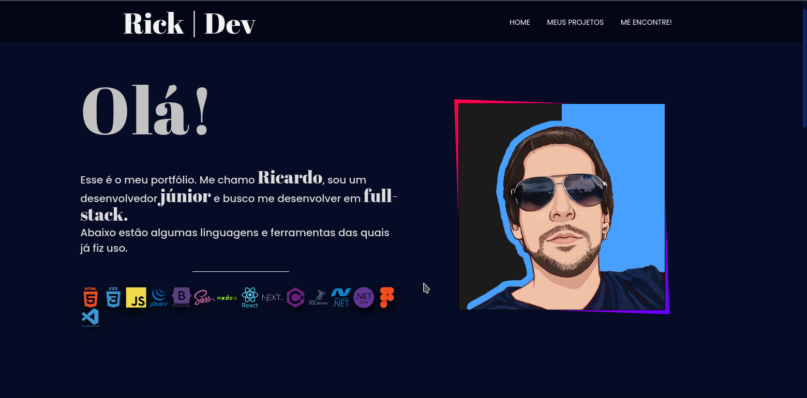
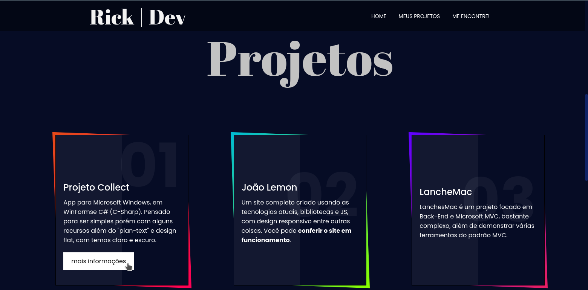
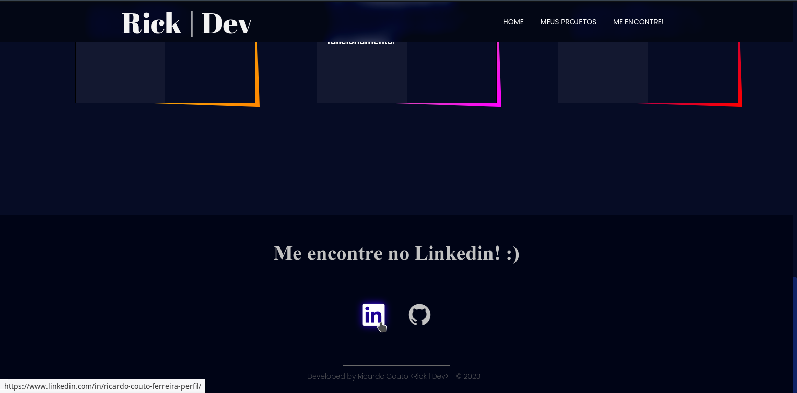
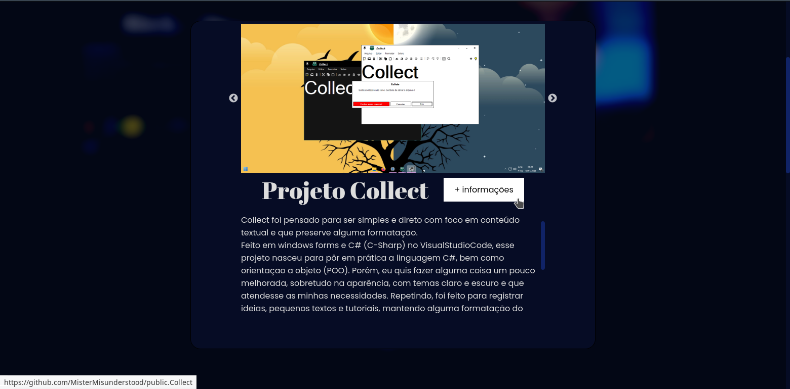
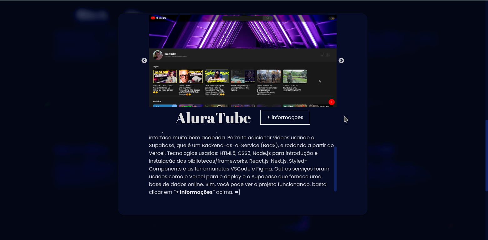
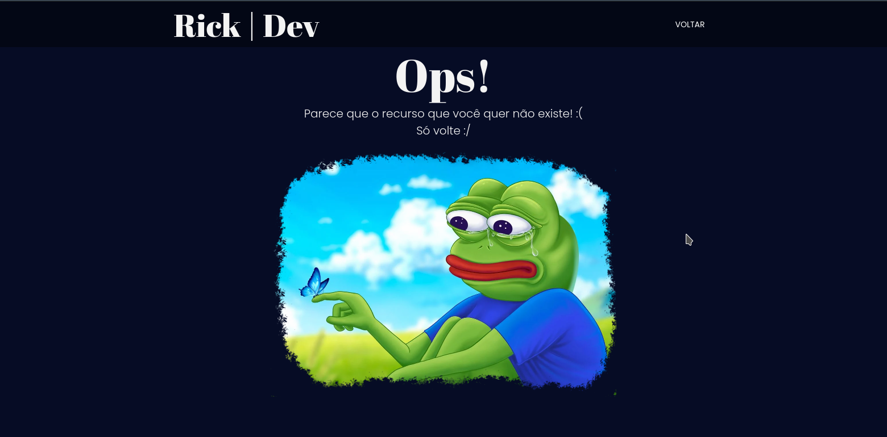

Rick | Dev
+ informaçõesSim, a inspiração para o tema e todo o portfólio veio de um vídeo com a demonstração do card que você pode ver em funcionamento nesse portfólio. Isso foi o suficiente para eu me inspirar em todo o resto, e procurei manter o design coeso, mas não sou um especialista em design. O projeto todo foi construído usando HTML5, CSS3, jQuery e JavaScript, e outras bibliotecas de funcionalidades para construir o carrossel e scroll suave. Clicando no botão "+ informações" acima, você será levado até meu github onde irá encontrar todos os projetos hospedados lá.